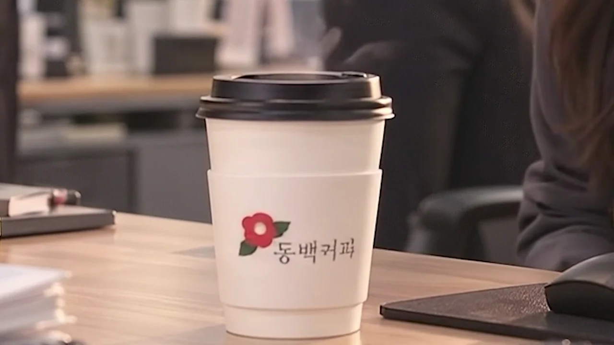

ALL WORKS
VIDEO · OFFICE BLACK COMEDY
동백커피 · 나만 다른 한 잔
EP.01 · 모두가 아이스 아메리카노를 마시는 사무실, 내 자리에만 따뜻한 도라지차가 놓였다.

OVERVIEW
도라지차 한 잔에서 시작한 오피스 코미디
목이 잠긴 진주에게만 따뜻한 도라지차가 도착합니다. 익숙한 오피스 로맨스처럼 시작한 장면에 메신저 한 통이 끼어들고, 호의라고 믿는 부장과 불편함을 느끼는 진주의 간극이 드러납니다.
- 형식
- 브랜드 홍보영상 실습
- 담당
- 기획 · 시나리오 · AI 영상 제작 · 편집
- 도구
- Google Flow · Premiere Pro 2026
FINAL FILM
나만 다른 한 잔
약 36초 · 2026년 11월 23일 편집본
PRODUCTION PROCESS
반전을 설계한 세 가지 선택
음료의 차이로 이야기를 시작
메뉴 조사에서 고른 도라지차를 진주에게만 주었습니다. 컵의 온도와 모양 차이가 메신저가 도착하기 전부터 두 인물의 관계를 궁금하게 만듭니다.
인물과 공간의 기준을 고정
진주와 부장의 모델시트를 만들고, 실제 브랜드 컵 이미지와 한국 사무실의 회색 파티션을 참고해 컷별로 얼굴·착장·소품을 점검했습니다.
메신저와 연기를 따로 제어
생성 영상에서 한글 알림이 흐트러져 메신저 그래픽을 편집 단계에서 분리했습니다. 짧은 정적과 진주의 굳은 표정 뒤에 빈자리와 사직서를 보여주며 반전을 마무리했습니다.